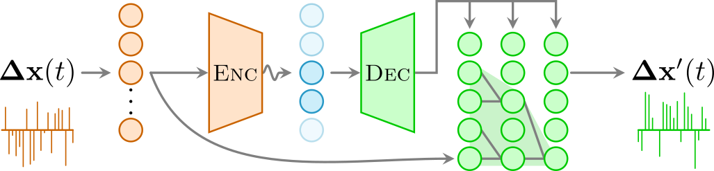

model_args = dict(# VAE #########################
o_dim=400,
nc_in=1, nc_out=6,
nf=[16]*4,
avg_size=16,
encoder=[200,100],
z_dim=6,
decoder=[100,200],
beta=0,
# WaveNet ########
in_channels=1,
res_channels=16,skip_channels=16,
c_channels=6,
g_channels=0,
res_kernel_size=3,
layer_size=4, # 6
stack_size=1,
out_distribution= "Normal",
num_mixtures=1,
use_pad=False,
model_name = 'SPIVAE',
)
model = VAEWaveNet(**model_args)Model
Model initialization and architecture.
The architecture of the interpretable autoregressive \(\beta\)-VAE works in the following manner: Given the displacements \(\mathbf{\Delta x}(t)\) of a diffusion trajectory, the encoder (orange) compresses them into an interpretable latent space (blue), in which few neurons (dark blue) represent physical features of the input data while others are noised out (light blue). An autoregressive decoder (green) generates from this latent representation the displacements \(\mathbf{\Delta x}'(t)\) of a new trajectory recursively, considering a certain receptive field RF (light green cone). 
Initialization
As the architecture can be quite deep, a careful initialization is needed (see weight_init function in the model class). We initialize the weights with normal Kaiming init in fan_out mode, taking into account that we use the nonlinear activation function ReLU.
init_cnn
init_cnn (m)
Initialize weights with kaiming normal in fan_out mode and bias to 0
VAE
We implement a 1D convolutional variational autoencoder.
The latent neurons are probabilistic, i.e., they are sampled following a distribution. The reparameterization trick provides the means to allow backpropagation by externalizing the sampling noise.
reparameterize
reparameterize (mu, logvar)
Samples from a normal distribution using the reparameterization trick.
| Type | Details | |
|---|---|---|
| mu | torch.Tensor | Mean of the normal distribution. Shape (batch_size, latent_dim) |
| logvar | torch.Tensor | Diagonal log variance of the normal distribution. Shape (batch_size, latent_dim) |
| Returns | torch.Tensor | Sampled latent z tensor as \(z=\epsilon\sigma+\mu\) |
We also take into account the sizes after n convolutions are applied to automate the model construction.
output_size_after_n_convt
output_size_after_n_convt (n, input_size, kernel_size, stride=1, padding=0, output_padding=0, dilation=1)
output_size_convt
output_size_convt (input_size, kernel_size, stride=1, padding=0, output_padding=0, dilation=1)
output_size_after_n_conv
output_size_after_n_conv (n, input_size, kernel_size, stride=1, padding=0, dilation=1)
output_size_conv
output_size_conv (input_size, kernel_size, stride=1, padding=0, dilation=1)
View
View (size)
Use as (un)flattening layer
VAEConv1d
VAEConv1d (nf, encoder, decoder, o_dim:int, nc_in=1, nc_out=6, z_dim=6, beta=0, avg_size=24, **kwargs)
1-dimensional convolutional VAE architecture
| Type | Default | Details | |
|---|---|---|---|
| nf | number of filters | ||
| encoder | list of Encoder’s dense layers sizes | ||
| decoder | list of Decoder’s dense layers sizes | ||
| o_dim | int | input size (T) | |
| nc_in | int | 1 | number of input channels |
| nc_out | int | 6 | number of output channels |
| z_dim | int | 6 | number of latent neurons |
| beta | int | 0 | weight of the KLD loss |
| avg_size | int | 24 | output size of the pooling layers |
| kwargs |
VAE + WaveNet
We implement an extensible version of a VAE with WaveNet as the autoregressive decoder.
sample_from_mix_gaussian
sample_from_mix_gaussian (y, log_scale_min=-12.0)
Sample from (discretized) mixture of gaussian distributions
| Type | Default | Details | |
|---|---|---|---|
| y | Tensor | Mixture of Gaussians parameters. Shape (B x C x T) | |
| log_scale_min | float | -12.0 | Log scale minimum value. In many other implementations this variable is never used. |
| Returns | Tensor |
DilatedCausalConv1d
DilatedCausalConv1d (mask_type, in_channels, out_channels, kernel_size=2, dilation=1, bias=True, use_pad=True)
Dilated causal convolution for WaveNet
ResidualBlock
ResidualBlock (res_channels, skip_channels, kernel_size, dilation, c_channels=0, g_channels=0, bias=True, use_pad=True)
Residual block with conditions and gate mechanism
VAEWaveNet
VAEWaveNet (in_channels=1, res_channels=16, skip_channels=16, c_channels=6, g_channels=0, out_channels=1, res_kernel_size=3, layer_size=4, stack_size=1, out_distribution='normal', discrete_channels=256, num_mixtures=1, use_pad=False, weight_norm=False, **kwargs)
VAE with autoregressive decoder
| Type | Default | Details | |
|---|---|---|---|
| in_channels | int | 1 | input channels |
| res_channels | int | 16 | residual channels |
| skip_channels | int | 16 | skip connections channels |
| c_channels | int | 6 | local conditioning |
| g_channels | int | 0 | global conditioning |
| out_channels | int | 1 | output channels |
| res_kernel_size | int | 3 | kernel_size of residual blocks dilated layers |
| layer_size | int | 4 | Largest dilation is 2^layer_size |
| stack_size | int | 1 | number of layers stacks |
| out_distribution | str | normal | |
| discrete_channels | int | 256 | |
| num_mixtures | int | 1 | |
| use_pad | bool | False | |
| weight_norm | bool | False | |
| kwargs |
We can create a model by specifying its parameters in a dict.
Printing the model object will reveal the declared layers.
modelVAEWaveNet(
(vae): VAEConv1d(
(encoder): Sequential(
(0): Conv1d(1, 16, kernel_size=(3,), stride=(1,))
(1): ReLU(inplace=True)
(2): Conv1d(16, 16, kernel_size=(3,), stride=(1,))
(3): ReLU(inplace=True)
(4): Conv1d(16, 16, kernel_size=(3,), stride=(1,))
(5): ReLU(inplace=True)
(6): Conv1d(16, 16, kernel_size=(3,), stride=(1,))
(7): ReLU(inplace=True)
(8): AdaptiveConcatPool1d(
(ap): AdaptiveAvgPool1d(output_size=16)
(mp): AdaptiveMaxPool1d(output_size=16)
)
(9): View()
(10): Linear(in_features=512, out_features=200, bias=True)
(11): ReLU(inplace=True)
(12): Linear(in_features=200, out_features=100, bias=True)
(13): ReLU(inplace=True)
(14): Linear(in_features=100, out_features=12, bias=True)
)
(decoder): Sequential(
(0): Linear(in_features=6, out_features=100, bias=True)
(1): ReLU(inplace=True)
(2): Linear(in_features=100, out_features=200, bias=True)
(3): ReLU(inplace=True)
(4): Linear(in_features=200, out_features=512, bias=True)
(5): ReLU(inplace=True)
(6): View()
)
(convt): Sequential(
(0): ConvTranspose1d(16, 16, kernel_size=(3,), stride=(1,))
(1): ReLU(inplace=True)
(2): ConvTranspose1d(16, 16, kernel_size=(3,), stride=(1,))
(3): ReLU(inplace=True)
(4): ConvTranspose1d(16, 16, kernel_size=(3,), stride=(1,))
(5): ReLU(inplace=True)
(6): ConvTranspose1d(16, 6, kernel_size=(3,), stride=(1,))
(7): ReLU(inplace=True)
)
)
(init_conv): Conv1d(1, 16, kernel_size=(1,), stride=(1,))
(causal): DilatedCausalConv1d(
(conv): Conv1d(16, 16, kernel_size=(2,), stride=(1,))
)
(res_stack): ModuleList(
(0): ResidualBlock(
(dilated): DilatedCausalConv1d(
(conv): Conv1d(16, 32, kernel_size=(3,), stride=(1,))
)
(conv_c): Conv1d(6, 32, kernel_size=(1,), stride=(1,), bias=False)
(conv_res): Conv1d(16, 16, kernel_size=(1,), stride=(1,))
(conv_skip): Conv1d(16, 16, kernel_size=(1,), stride=(1,))
)
(1): ResidualBlock(
(dilated): DilatedCausalConv1d(
(conv): Conv1d(16, 32, kernel_size=(3,), stride=(1,), dilation=(2,))
)
(conv_c): Conv1d(6, 32, kernel_size=(1,), stride=(1,), bias=False)
(conv_res): Conv1d(16, 16, kernel_size=(1,), stride=(1,))
(conv_skip): Conv1d(16, 16, kernel_size=(1,), stride=(1,))
)
(2): ResidualBlock(
(dilated): DilatedCausalConv1d(
(conv): Conv1d(16, 32, kernel_size=(3,), stride=(1,), dilation=(4,))
)
(conv_c): Conv1d(6, 32, kernel_size=(1,), stride=(1,), bias=False)
(conv_res): Conv1d(16, 16, kernel_size=(1,), stride=(1,))
(conv_skip): Conv1d(16, 16, kernel_size=(1,), stride=(1,))
)
(3): ResidualBlock(
(dilated): DilatedCausalConv1d(
(conv): Conv1d(16, 32, kernel_size=(3,), stride=(1,), dilation=(8,))
)
(conv_c): Conv1d(6, 32, kernel_size=(1,), stride=(1,), bias=False)
(conv_res): Conv1d(16, 16, kernel_size=(1,), stride=(1,))
(conv_skip): Conv1d(16, 16, kernel_size=(1,), stride=(1,))
)
)
(out_conv): Sequential(
(0): ReLU(inplace=True)
(1): Conv1d(16, 16, kernel_size=(1,), stride=(1,))
(2): ReLU(inplace=True)
(3): Conv1d(16, 9, kernel_size=(1,), stride=(1,))
)
)Training example
With the data and the model, we can already start training.
DEVICE= 'cpu' # 'cuda'
print(DEVICE)cpuDs = np.linspace(2e-5,2e-2,10)
alphas = np.linspace(0.2,1.8,21)
n_alphas,n_Ds = len(alphas), len(Ds)
ds_args = dict(path="../../data/raw/", model='fbm', # 'sbm'
N=int(6_000/n_alphas/n_Ds*2),
T=400,
D=Ds, alpha=alphas,seed=0,
valid_pct=0.2,
bs=2**8,
N_save=6_000, T_save=400,
)
model_args = dict(# VAE ###########################
o_dim=ds_args['T']-1,
nc_in=1, nc_out=6,
nf=[16]*4,
avg_size=16,
encoder=[200,100],
z_dim=6,
decoder=[100,200],
beta=0,
# WaveNet ########
in_channels=1,
res_channels=16,skip_channels=16,
c_channels=6,
g_channels=0,
res_kernel_size=3,
layer_size=4, # 6 # Largest dilation is 2**layer_size
stack_size=1,
out_distribution= "Normal",
num_mixtures=1,
use_pad=False,
model_name = 'SPIVAE',
)dls = load_data(ds_args)model = VAEWaveNet(**model_args).to(DEVICE)loss_fn = Loss(model.receptive_field, model.c_channels,
beta=model_args['beta'], reduction='mean')learn = Learner(dls, model, loss_func=loss_fn,)learn.fit_one_cycle(4, lr_max=1e-4)| epoch | train_loss | valid_loss | time |
|---|---|---|---|
| 0 | 0.982180 | 0.949590 | 00:28 |
| 1 | 0.934559 | 0.880010 | 00:25 |
| 2 | 0.882010 | 0.822553 | 00:26 |
| 3 | 0.843744 | 0.810182 | 00:29 |